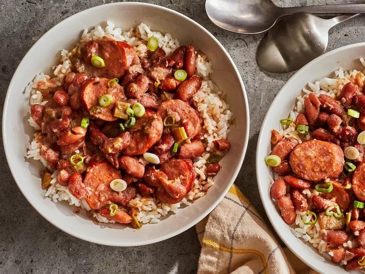

Louisiana Red Bean and Rice

Authentic Cajun flavor! I grew up in Louisiana and love red beans and rice; these are just like I remember. Serve with hot sauce for a little kick. My family loved to splash a little cider vinegar in each bowl.
List of Ingredents
- 1 pound dry kidney beans
- 1/4 cup olive oil
- 1 green bell pepper, chopped
- 2 stalks celery, chopped
- 2 tablespoons minced garlic
- 6cups water
- 2 bay leaves
- 1 tablespoon dried parsley
- 1 teaspoon dried thyme
- 1 teaspoon Cajun seasoning
- 1/2 teaspoon cayenne pepper
- 1/4 teaspoon dried sage
- 1 pound andouille sausage, sliced
- 4 cups water
- 2 cups long grain white rice
Directions
- Rinse beans, and then soak in a large pot of water overnight.
- Heat oil in a skillet over medium heat. Cook onion, bell pepper, celery, and garlic in olive oil for 3 to 4 minutes.
- Rinse beans, and transfer to a large pot with 6 cups water. Stir cooked vegetables into beans. Season with bay leaves, parsley, thyme, Cajun seasoning, cayenne pepper, and sage. Bring to a boil, and then reduce heat to medium-low. Simmer for 2 1/2 hours.
- Stir sausage into beans, and continue to simmer for 30 minutes.
- Stir sausage into beans, and continue to simmer for 30 minutes.